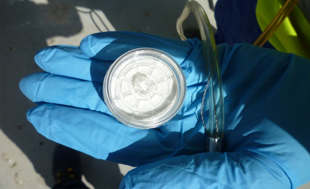
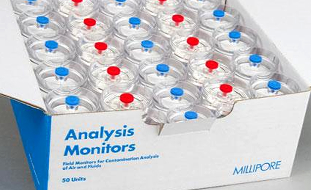
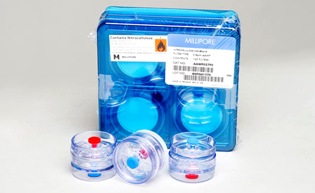
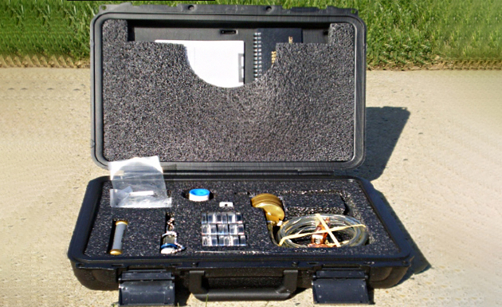
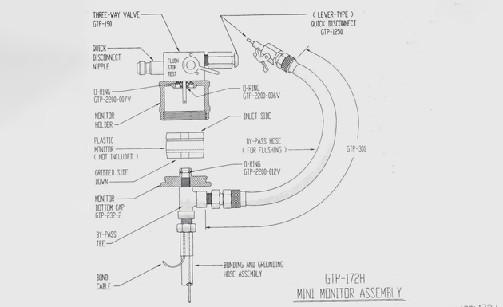
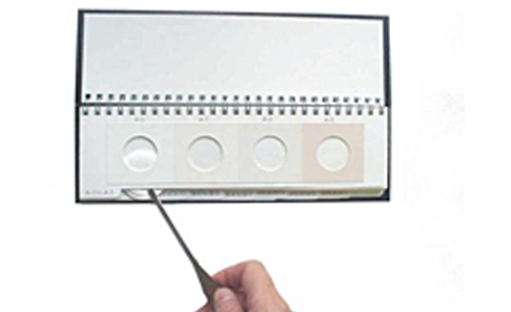
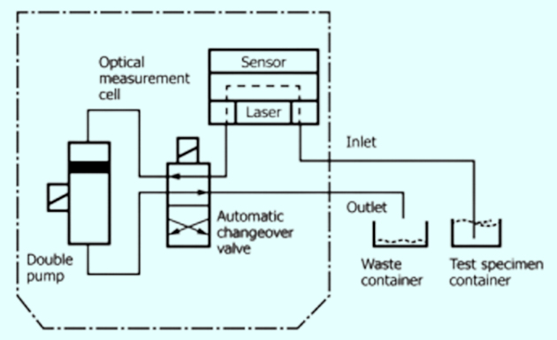
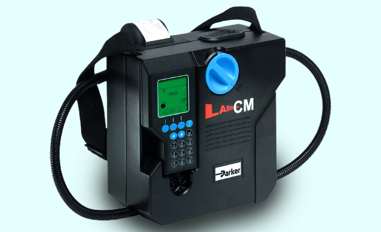

Session 5.5
Membrane Filtration Test
- The purpose of the membrane filter tests is to evaluate particulate contamination in aviation fuels
- Particulate matter may consist of sand, dust, dirt, fibres, various types of metal oxides, rubber particles etc
- Some such solids are easily recognizable large particles which readily settle out but most particulate contamination in aviation fuels is in the form of extremely small micron size particles that are suspended in the fuel and not visible to the naked eye
- the membrane filter procedure uses a very fine membrane that filters out all particles above 0.8 of a micron in size
- The main two types of tests are the
- Colorimetric test, which is a field test, and
- Gravimetric test, which is performed in the field but requires weighing of the membranes in a laboratory to determine the result of the test
- Qualitative assessment of a locally prepared filter membrane after running 5 litres of product through it and comparing, wet and dry, to an ASTM standard
- Dis-colouration is a function of ‘dirt’ and/or ‘colour bodies’
- Normally performed immediately downstream of filters
- Rating of 5 wet or 4 dry or more than 2 above previous reading should prompt investigation
- Quantitative, weight, assessment of a laboratory-prepared filter membrane after running, typically, 5 litres of product through it.
- Sealed capsules must only be opened in laboratory conditions
- into-plane limit is 1.0 mg. per litre absolute, but 0.2mg/litre is expected
- Gravimetric Millipore does not differentiate between a single heavy particle and many small, light particles.
- Particle size and distribution varies and may be indicative of contaminant type
- Particle Count has been used as a qualitative tool in lubricants for many years.
- As per fuel standards, testing and reporting of Particulate Contamination is required at the point of manufacture
- At present Particle Count is NOT a Field test
- Particle Count may replace Membrane Filtration test in future as and when portable Particle Count equipment ‘calibrated’ for use in aviation fuel are available
- Particle Counts have a huge significance for Appearance testing
- In future, Particle Counts will have an impact on:
- Fuel Specifications
- Filter design
- Trading contracts
- ISO Code – is a standard method for coding the level of contamination by particles.
- ISO 4406 test method is used to count and measure the size of dispersed Solid Particle Contaminants, always present in hydraulic fluids, in the overall range from 4 µm to or larger than 15 µm
- Particle sizes are measured in microns (μ).A micron is 1/1000 mm on 10-6 meter denoted with symbol µm
- particle size, µm(c), — the projected area equivalent diameter of spherical particles passing through the detecting cell in accordance with ISO 11171.
- All particle counts are per milliliter
- Particle size cumulative count, — the total number of particles per mL, in size bands, ≥4 µm(c), ≥6 µm(c), and ≥14 µm(c),
- Particle size cumulative count is expressed by ISO Codes as specified by ISO 4406
- These codes are written in the form of x/y/z, where x, y and z are ISO Codes equivalent to the cumulative counts, per mL, for particle size bands ≥4 µm(c), ≥6 µm(c), and ≥14 µm(c) respectively
- the first scale number represents the number of particles equal to or larger than 4 µm(c) per milliliter of fluid;
- the second scale number represents the number of particles equal to or larger than 6 µm(c) per milliliter of fluid;
- the third scale number represents the number of particles equal to or larger than 14 µm(c) per milliliter of fluid.



5.5.1 Qualitative/Quantitative assessment of particulate contamination
Assessment of dirt and particulate in fuel
Colourimetric Analysis
Gravimetric Analysis
Apparatus
 Schematic Arrangement for test
ASTM standard

Membrane Filtration tests are covered thoroughly in a separate training module
5.5.2 Introduction to Particle Count and ISO Codes
Automatic Particle Counter
Operating on the laser light obscuration principle, comprising an optical measurement cell, bi-directional double pump, electronics and software to analyze the test specimen, and display and print the particle measurement data


ISO Codes
the third scale number represents the number of particles equal to or larger than 14 µm(c) per milliliter of fluid.